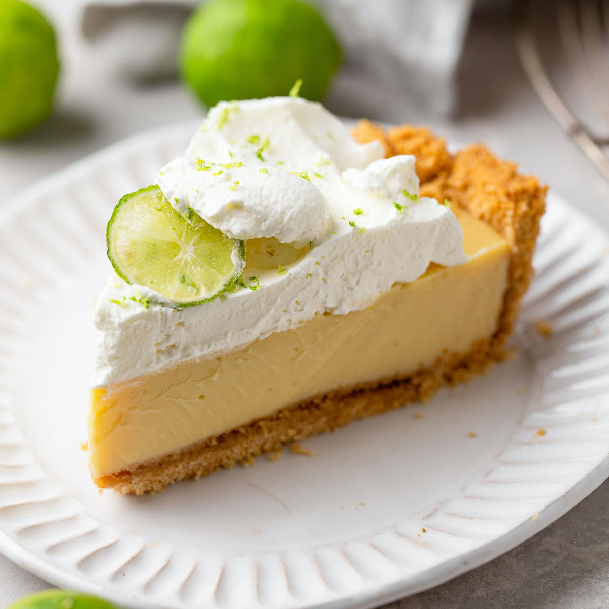

Key Lime Pie

Description
Key lime pie is an easy to make dessert with very few ingredients, but oh so delicious!
Ingredients
Crust
- 1/2 cup butter
- 1 pk Graham Crackers
- 2 1/2 Tbsp Sugar
Filling
- 3 Large Egg Yokes
- 1 Tbsp Lime Zest
- 1/2 Cup Strained Lime Juice
- 14 oz can Sweetened Condensed Milk
- 1/4 Cup Sour Cream
Topping
- 3/4 Cup Heavy Cream
- 1 1/2 Tbsp Sugar
Directions
- Preheat oven to 350 degrees.
- Crush Graham crackers and combine with sugar and melted butter.
- Pour this mixture in a pie pan and press smooth using your hands or a spoon.
- Bake until golden brown in preheted oven approximately 11-13 minutes.
- Remove crust from oven and set aside to cool. Meanwhile you will prepare the filling.
- Lower the oven temperature to 325 degrees.
- Whisk together egg yokes and lime zest.
- Stir in sweetened condensed milk, lime juice and, sour cream and mix until blended.
- Set mixture aside to rest and thicken for 15 minutes.
- Pour the filling into the cooled crust and bake for 15-17 minutes.
- Once baked, allow pie to rest and cool for 45 minutes before placeing it in the fridge for atleast 4 hours.
- Prepare whipped topping by blending heavy whipping cream and sugar til stiff.
- Pipe on whipped topping and serve!